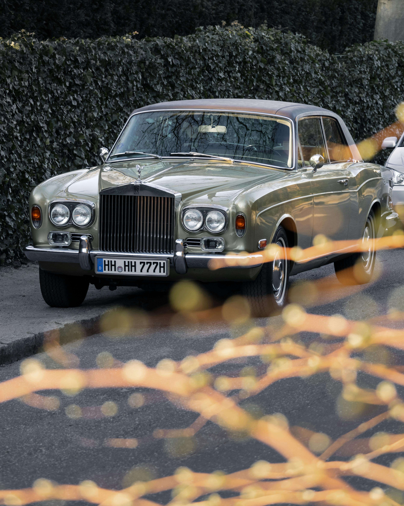

Founded in 1998, Aurelius Motors was born from a vision to redefine automotive luxury. What began as a boutique design studio quickly evolved into a marque of craftsmanship, innovation, and performance. Each Aurelius vehicle is hand-assembled by artisans who blend tradition with cutting-edge engineering — where power meets elegance, and every detail serves a purpose.
Over the years, Aurelius has become synonymous with prestige and refinement. From the sleek lines of our early grand tourers to the silent precision of our modern hybrid powertrains, we’ve never stopped pushing boundaries. Our story is not just one of machines, but of mastery — driven by distinction, shaped by passion.